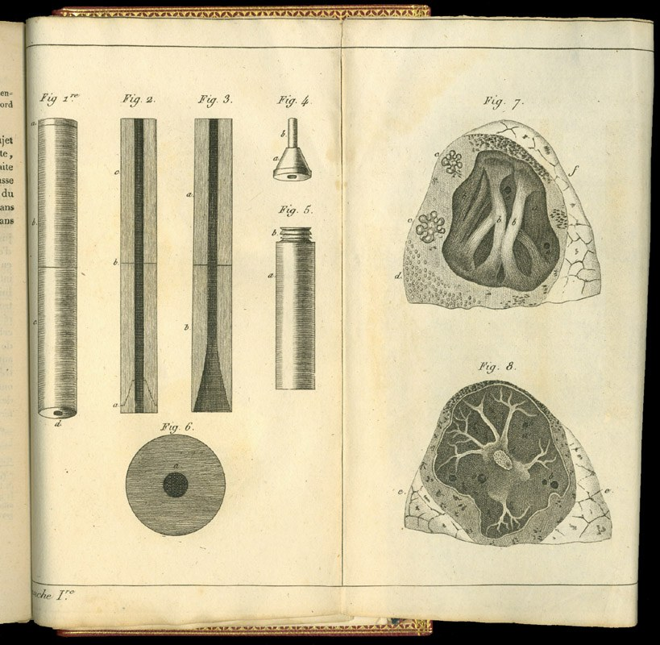
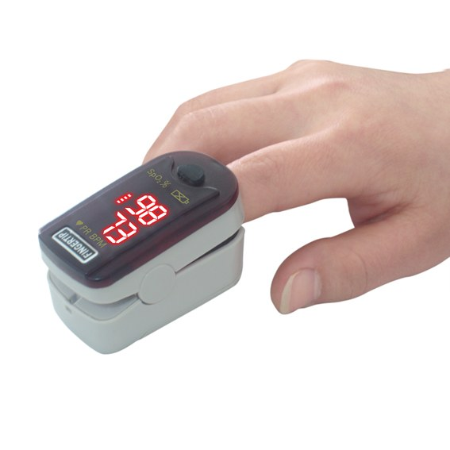

Hva er sykdom?
Sykdommers vekst og fall, og teknologiens makt over sykdom
Bjørn Hofmann, Hva er sykdom? (2008), kap. 1 og 10
Laennecs stetoskop, 1819
- René Laennec (1781–1826), fransk lege, fant opp stetoskopet i 1816: et rør av tre
- Tegningene viser stetoskopet i deler og tverrsnitt av syke lunger
- Legen kunne lytte til sykdommen selv: et tidlig steg i teknologiens «objektivering» av sykdom (FLA 8, Hofmann ss. 149–150)
Kilde: Laennec, De l’auscultation médiate (Paris, 1819), plansje I. Public domain, via Wikimedia Commons

Samme opplegg som forrige uke
- Som i uke 41: én del per FLA-spørsmål, nå åtte, ett om gangen
- Hver del: spørsmålet, et eksempel, så lagquiz på mobilen
- Lagquiz som sist: alene først, så laget, og én svarer for laget (4/3/2/1 poeng)
- Nytt: flervalgene er de samme som i FLA-dokumentet. På mobilen er A–D nummerert 1–4
- Nytt: etter hvert FLA-flervalg kommer et ekstra flervalg fra tidligere uker. Svareren går selv videre; de andre trykker «Neste spørsmål» når laget er ferdig. Mobilen sier «gir ikke poeng», men ekstrapoengene teller i en egen tavle
Bli med i avstemningen
Én gang for hele timen.
Én i hver gruppe svarer for laget: velg det og skriv lagnavn når du blir med.
Fra teknologisyn til sykdomssyn
- Uke 40: verdier virker inn i vitenskapen, og vi både forklarer og forstår
- Uke 41: teknologien er ikke nøytral, den former oss
- I dag: former normer og teknologi også hva vi regner som sykdom?
- Kap. 1: hvorfor sykdommer kommer og går. Kap. 10: teknologiens rolle
FLA 42: de åtte spørsmålene
Kap. 1: Sykdommers vekst og fall
1 Må vi kjenne årsaken?2 Faglige normer for sykdom3 Cochleaimplantat og «normalitet»4 Drapetomani og homoseksualitet5 Illness, disease og sicknessKap. 10: Teknologi og sykdom
6 Teknologiens tre plan7 Asymptomatiske sykdommer8 Fra fortelling til stetoskopKlikk for å gå dit. Tilbake hit: lenken øverst til høyre på hvert spørsmål.
Må vi kjenne årsaken?
I begrepslisten forklarte du skillet mellom en nødvendig og en tilstrekkelig betingelse. Hvorfor mener Hofmann at kunnskap om årsak ikke er en nødvendig betingelse for sykdom? Bruk minst ett av Hofmanns eksempler (ss. 17–18 i Hofmanns sidenummerering) og ett eget eksempel.
Hvor i pensum: Hofmann kap. 1, delene «Årsaker» og «Teorier» (ss. 16–17) og boksen om tilstrekkelig og nødvendig betingelse (s. 18)
Relevante begreper: «forskjell mellom nødvendig og tilstrekkelig betingelse for sykdom» (uke 38); «sykdom: illness, disease og sickness» (uke 38).
Se etter i teksten: diabetes gjennom historien; magesår og Helicobacter pylori; hepatitt A uten symptomer; vannkopper og helvetesild; «kunnskap om årsak ikke er en nødvendig betingelse»
Sukkersyke gjennom 2000 år
Eksempelet
- Oldtiden: diabetes er tørst og store mengder søtlig urin (symptomer)
- Senere: en sykdom i nyrene, i leveren, så i bukspyttkjertelen
- 1921: insulinet oppdages, og diabetes blir en hormonforstyrrelse
- I dag: type 1 er en autoimmun sykdom, men årsaken er fortsatt ukjent
Hva viser eksempelet?
- Årsaken er byttet ut mange ganger, men diabetes har vært en sykdom hele tiden
- Altså er kjent årsak ikke nødvendig for at noe er sykdom
- Når en årsak blir kjent, endres sykdommen: magesår gikk fra stress til Helicobacter pylori (s. 16)
- Finn ditt eget eksempel: en sykdom der årsaken er ukjent (s. 17)
Hva følger av at kunnskap om årsak ikke er en nødvendig betingelse for sykdom?
Hofmann s. 17 · på mobilen er A–D nummerert 1–4
Poengtavle, FLA
Lagquiz 1 (FLA 1): resultat
Alene
Lagenes første valg
Poeng
Anna mener at vi bør gi mer penger til bistand. Hvilket alternativ uttrykker best en utilitaristisk begrunnelse for Annas synspunkt?
FVO etikk (uke 37–39), spm. 8 · på mobilen er A–D nummerert 1–4
Poengtavle, ekstra
Ekstra 1: resultat
Alene
Lagenes første valg
Poeng
Faglige normer for sykdom
Hva menes med at faglige eller vitenskapelige normer er med på å avgjøre hva som oppfattes som sykdom? Ta utgangspunkt i det Hofmann kaller «nasjonale sykdommer» og eksemplet med fibromyalgi i Norge og amalgamforgiftning i Sverige (s. 20). Knytt gjerne an til verdier i vitenskap fra uke 40 (Tenk! kap. 8).
Hvor i pensum: Hofmann kap. 1, «Avvik fra normalen» (ss. 19–20)
Relevante begreper: «avvik fra normalen (som sykdomskriterium)» (uke 38); «situert kunnskap og standpunktepistemologi» (uke 41); «relativisme, realisme og konstruktivisme i vitenskap» (uke 41).
Se etter i teksten: laktoseintoleranse; høyt blodtrykk og overvekt; fibromyalgi i Norge og amalgamforgiftning i Sverige; sykdommers status
«Nasjonale sykdommer» og status
Eksempelet
- Frankrike: «crise de foie» (akutt leversykdom) og «spasmophilie»
- Tyskland: «Herzinsuffizienz» og «Kreislaufkollaps»
- Storbritannia: «chilblains» (kuldereaksjoner i huden)
- Høy status blant leger: hjerteinfarkt, leukemi, hjernesvulst. Lav: fibromyalgi, skrumplever, angst
Hva viser eksempelet?
- Samme kropper, ulike diagnoser: faglige tradisjoner avgjør hva helsepersonell ser
- Status: høyteknologi og vitale organer øverst, psykiatri og eldres sykdommer nederst
- Bro til uke 40: verdier virker inn i vitenskapen (Tenk! kap. 8)
- Hvilke normer i ditt fag avgjør hva du ser som sykdom?
De samme symptomene ble oftere tolket som fibromyalgi i Norge og som amalgamforgiftning i Sverige. Hva skal eksemplet vise?
Hofmann s. 20 · på mobilen er A–D nummerert 1–4
Poengtavle, FLA
Lagquiz 2 (FLA 2): resultat
Alene
Lagenes første valg
Poeng
Det følgende er standpunktet (S) i et resonnement: «Det finnes utenomjordisk liv på jorda.» Hvordan skal vi vurdere påstanden «Norge er et kongedømme.» i relasjon til S?
FVO argumentasjonsteori (uke 35–36), spm. 4 · på mobilen er A–D nummerert 1–4
Poengtavle, ekstra
Ekstra 2: resultat
Alene
Lagenes første valg
Poeng
Cochleaimplantat og «normalitet»
Hofmann hevder at muligheten for å gjøre noe med en tilstand i seg selv bidrar til å skape nye sykdommer (s. 21). Hvorfor viser eksemplet med cochleaimplantat at det ikke er enkelt å avgjøre sykdomsspørsmål ved å henvise til «normalitet»? Hofmann spør også: «Er det da slik at når noe kan gjøres, så bør det gjøres?» Hva mener du?
Hvor i pensum: Hofmann kap. 1, «Når noe kan gjøres» (s. 21)
Relevante begreper: «avvik fra normalen (som sykdomskriterium)» (uke 38); «er»/«bør»-problemet (uke 35); «appell til det naturlige» (uke 35); «teknologisk sykdom / teknologi konstituerer sykdom» (uke 43).
Se etter i teksten: assistert befruktning og tannstilling; aldring; cochleaimplantatet; døve som kulturell minoritet
Å velge et døvt barn
Eksempelet
2002: to døve kvinner i USA valgte en døv sæddonor for å få et døvt barn. Sønnen ble født nesten uten hørsel. For dem var døvhet et språk og en kultur, ikke en sykdom.
Hva viser eksempelet?
- Samme tanke som hos døve foreldre som sier nei til cochleaimplantat (s. 21)
- Avvik fra normalen: fra hvilken norm, og hvem sin?
- Når noe kan gjøres, bør det da gjøres? Er og bør (uke 35)
- Hofmann: «normalitet» gir ingen enkle løsninger
Hvorfor har mange døve foreldre motsatt seg cochleaimplantat hos sine døve barn, ifølge Hofmann?
Hofmann s. 21 · på mobilen er A–D nummerert 1–4
Poengtavle, FLA
Lagquiz 3 (FLA 3): resultat
Alene
Lagenes første valg
Poeng
Det følgende er standpunktet S i et resonnement: “Den norske styringsrenten vil fortsette å øke i neste kvartal.” Det følgende argumentet A er et standpunktargument for S: “Det er fremdeles høy inflasjon i Norge.” Hvilket av alternativene nedenfor er et indirekte argument i denne argumentasjonen?
FVO argumentasjonsteori (uke 35–36), spm. 1 · på mobilen er A–D nummerert 1–4
Poengtavle, ekstra
Ekstra 3: resultat
Alene
Lagenes første valg
Poeng
Drapetomani og homoseksualitet
Hva viser eksemplene drapetomani og homoseksualitet om sosiale og kulturelle normers rolle i sykdommers tilblivelse (s. 22)? Hofmann skriver at vi «ganske sikkert» har sykdommer som ettertiden vil dømme oss for. Hvilke tilstander vil du foreslå som kandidater, og hvordan vil du begrunne forslaget?
Hvor i pensum: Hofmann kap. 1, «Sosiale og kulturelle normer for sykdom» (s. 22)
Relevante begreper: «sykdom: illness, disease og sickness» (uke 38); «avvik fra normalen (som sykdomskriterium)» (uke 38); «moralsk relativisme» (uke 35); «deskriptiv vs normativ etikk» (uke 35).
Se etter i teksten: drapetomani (1854); homoseksualitet som diagnose til 1977; «sykdommer som ettertiden vil dømme oss for»
Homoseksualitet som diagnose
Eksempelet
Homoseksualitet var klassifisert som sykdom i Norge fram til 1977. En av grunnene til diagnosen var å hindre stigmatisering: den skulle gjøre homoseksualitet alminnelig. I ettertid ser vi at den virket stigmatiserende.
Hva viser eksempelet?
- Sosiale og kulturelle normer, ikke bare biologi, avgjør hva som blir sykdom
- Drapetomani (1854): diagnosen tjente slaveeierne
- Også godt ment sykeliggjøring kan skade
- Kandidater i dag? Begrunn med et kriterium, ikke bare en mening
Hva var «drapetomani»?
Hofmann s. 22 · på mobilen er A–D nummerert 1–4
Poengtavle, FLA
Lagquiz 4 (FLA 4): resultat
Alene
Lagenes første valg
Poeng
Det følgende er standpunktet S i en argumentasjon: “Staten bør ikke utstede flere lisenser for oljeleting på norsk sokkel.” I argumentasjonen påstås følgende: A1: “Det er uansvarlig å tillate ytterligere klimautslipp.” A2: “Oljeproduksjon vil ikke være samfunnsøkonomisk lønnsom på sikt.” Hvilken rolle har påstandene A1 og A2 i argumentasjonen?
FVO argumentasjonsteori (uke 35–36), spm. 11 · på mobilen er A–D nummerert 1–4
Poengtavle, ekstra
Ekstra 4: resultat
Alene
Lagenes første valg
Poeng
Illness, disease og sickness
I begrepslisten gjorde du rede for de tre perspektivene illness, disease og sickness (s. 24). Hvilket av perspektivene mener du veier tyngst når en ny tilstand skal anerkjennes som sykdom? Bruk et eksempel, f.eks. fibromyalgi, ME, AD/HD eller et eget.
Hvor i pensum: Hofmann kap. 1, «Subjektiv sykdom» (ss. 23–24)
Relevante begreper: «sykdom: illness, disease og sickness» (uke 38); «de tre prioriteringskriteriene» (uke 38); «avvik fra normalen (som sykdomskriterium)» (uke 38).
Se etter i teksten: sykdommer uten kjent årsak; pasientorganisasjoner; de tre perspektivene (s. 24)
Syk, men hvem bestemmer?
Eksempelet
Hanne er utmattet etter en virusinfeksjon og klarer ikke å jobbe. Prøvene er normale, og ingen kjenner årsaken. Hun får diagnosen ME (myalgisk encefalomyelitt, kronisk utmattelsessyndrom) og søker om sykepenger.
Hva viser eksempelet?
- Illness: Hanne opplever seg som syk
- Disease: helsepersonell finner ingen sikker årsak eller sikre tegn
- Sickness: samfunnet avgjør om tilstanden gir rett til sykepenger
- Pasientorganisasjoner har gjort slike tilstander synlige (s. 23). Hvilket perspektiv bør veie tyngst?
Kari får sykepenger fordi tilstanden hennes er anerkjent som grunnlag for fritak fra arbeid. Hvilket perspektiv er dette?
Hofmann s. 24 · på mobilen er A–D nummerert 1–4
Poengtavle, FLA
Lagquiz 5 (FLA 5): resultat
Alene
Lagenes første valg
Poeng
Hva er den logiske funksjonen til et argument?
FVO argumentasjonsteori (uke 35–36), spm. 10 · på mobilen er A–D nummerert 1–4
Poengtavle, ekstra
Ekstra 5: resultat
Alene
Lagenes første valg
Poeng
Teknologiens tre plan
Teknologiens betydning for sykdom undersøkes på tre plan, som listes opp på s. 142 og oppsummeres på s. 154. Gjør kort rede for hvert av dem:
- Det ontologiske (avsnittet «Teknologien frembringer de fenomener som definerer sykdom», ss. 143–144). Hofmann skriver: «Uten mikroskopet, ingen sigdcelleanemi» (note 49, s. 142). Betyr dette at teknologien oppdager sykdommer, eller at den skaper dem?
- Det semiologiske/epistemologiske (avsnittet «Teknologiskapt kunnskap om sykdom», særlig «Teknologiens tegn på sykdom», ss. 144–145).
- Det pragmatiske (avsnittet «Teknologiens anvendelse skaper sykdom», ss. 150–153). Ufrivillig barnløshet, menopause, skallethet og nyresvikt (ESRD) ble regnet som sykdom eller helsefaglig anliggende først da det fantes teknologi for å behandle dem (s. 152). Er det problematisk at behandlingsmuligheten avgjør hva som regnes som sykdom?
Hvor i pensum: Hofmann kap. 10, «Teknologisk sykdom» (s. 142), de tre avsnittene ss. 143–153 og oppsummeringen «Sykdom skapt av teknologi» (s. 154)
Relevante begreper: «teknologisk sykdom / teknologi konstituerer sykdom» (uke 43); «paraklinisk tegn» (uke 43); «epistemologi» (uke 40); «relativisme, realisme og konstruktivisme i vitenskap» (uke 41); «teknologisk determinisme» (uke 43); «det relasjonelle teknologisynet» (uke 43).
Se etter i teksten: «Uten mikroskopet, ingen sigdcelleanemi»; parakliniske tegn; «Dersom noe kan behandles, så blir det sykdom»
Fra vattersott til nyresvikt
Eksempelet
Vattersott (ødem, væske i vevet) ble til Brights sykdom, så nefritt (nyrebetennelse), og i dag ESRD (end-stage renal disease: nyresvikt i sluttfasen). Dialyse og transplantasjon gjorde ESRD til en sykdom, med nye plager som kommer av selve behandlingen.
Hva viser eksempelet?
- Ontologisk: enhetene som definerer sykdommen, som urea (urinstoff), er gitt av teknologi
- Semiologisk/epistemologisk: målte, parakliniske tegn avgjør diagnosen
- Pragmatisk: dialysen gjorde tilstanden til en sykdom vi behandler
- Oppdager teknologien sykdommen, eller skaper den den? (note 49)
Hvilket av Hofmanns tre plan handler om at muligheten for behandling gjør en tilstand til sykdom?
Hofmann ss. 150–4 · på mobilen er A–D nummerert 1–4
Poengtavle, FLA
Lagquiz 6 (FLA 6): resultat
Alene
Lagenes første valg
Poeng
Hvilken av de følgende formuleringene er mest i samsvar med Kants universalitetsprinsipp?
FVO etikk (uke 37–39), spm. 9 · på mobilen er A–D nummerert 1–4
Poengtavle, ekstra
Ekstra 6: resultat
Alene
Lagenes første valg
Poeng
Asymptomatiske sykdommer
Teknologien sies å ha frembrakt en helt ny type sykdommer: de asymptomatiske (ss. 147–148). Du har forklart skillet mellom illness og disease i begrepslisten. Hvordan endrer denne nye typen sykdommer dette skillet? Gi et eksempel, f.eks. høyt blodtrykk, atrieflimmer oppdaget på EKG, eller et eget.
Hvor i pensum: Hofmann kap. 10, «Teknologiens ordning av sykdom» (ss. 147–148)
Relevante begreper: «sykdom: illness, disease og sickness» (uke 38); «paraklinisk tegn» (uke 43); «teknologisk sykdom / teknologi konstituerer sykdom» (uke 43); «overraskelsesprinsippet» (uke 41) (tenk på «base rate» ved screening).
Se etter i teksten: EKG ved stresstesting; atrieflimmer og stille iskemi; «asymptomatiske sykdommer»; skillet mellom illness og disease
EKG og den stille sykdommen
Eksempelet
EKG (elektrokardiogram, engelsk ECG) ved stresstesting viste at mange uten plager hadde de samme EKG-endringene som pasienter med angina (brystsmerter), og høyere risiko for hjertesykdom. Atrieflimmer (atrial fibrillation) og stille iskemi (for lite blod til hjertet, uten smerter) ble egne sykdommer.
Hva viser eksempelet?
- Disease uten illness: syk uten å føle seg syk
- Hofmann: teknologien øker skillet mellom illness og disease (s. 148)
- Screening av friske: husk base rate (uke 40). Mange positive svar er falske
- Prøvesvaret kan selv bli en del av det å være syk (s. 150)
Hva har asymptomatiske sykdommer gjort med skillet mellom illness og disease, ifølge Hofmann?
Hofmann ss. 147–8 · på mobilen er A–D nummerert 1–4
Poengtavle, FLA
Lagquiz 7 (FLA 7): resultat
Alene
Lagenes første valg
Poeng
Det følgende er standpunktet (S) i et resonnement: «Det finnes utenomjordisk liv på jorda.» Det følgende argumentet (A1) er et standpunktargument for S: «Det amerikanske flyvåpenet har gjort observasjoner av fenomener som de ikke har noen god forklaring på.» Les det følgende argumentet: (A2) «Selv om flyvåpenet ikke har funnet noen god forklaring på observasjonene, kan de likevel skyldes vanlige optiske fenomener.» Hvordan kan vi best karakterisere argument A2 i forbindelse S og A1?
FVO argumentasjonsteori (uke 35–36), spm. 5 · på mobilen er A–D nummerert 1–4
Poengtavle, ekstra
Ekstra 7: resultat
Alene
Lagenes første valg
Poeng
Fra fortelling til stetoskop
Hofmann beskriver hvordan medisinen har beveget seg fra pasientens fortelling til stetoskopet, blodtrykksmålingen og EKG-et (s. 149). Hvordan bidrar denne utviklingen til en «objektivering» av sykdom, og hvilken kritikk har vært reist mot den (ss. 149–150)? Knytt gjerne an til hermeneutikken fra uke 40 og skillet mellom å forklare og å forstå.
Hvor i pensum: Hofmann kap. 10, «Teknologiens objektivering av sykdom» (ss. 149–150)
Relevante begreper: «paraklinisk tegn» (uke 43); «hermeneutikk» (uke 42); «forforståelse» (uke 42); «den hermeneutiske sirkel» (uke 42); «evidensbasert medisin (EBM)» (uke 42); «Heidegger sin teknologisyn» (uke 43).
Se etter i teksten: stetoskopet, blodtrykksmåling og EKG; Callahan; «stranger medicine»; røntgenbildet som del av illness
Stetoskopet og pulsoksymeteret
Eksempelet

Rcp.basheer, CC BY-SA 3.0
Med stetoskopet (Laennec, 1816) kunne legen lytte til sykdommen selv, uten å stole på pasientens fortelling. Laennecs tegninger så vi på tittelsliden. I dag har pulsoksymeteret (pulse oximeter: måler oksygen i blodet med lys) langt på vei erstattet å se på blodets farge (s. 145).
Hva viser eksempelet?
- Objektivering: fra pasientens fortelling til tegn som måles (s. 149)
- Fordelen: mer pålitelig, færre feil (s. 150)
- Kritikken: «stranger medicine» (fremmedgjort medisin), organer i stedet for personer (Callahan)
- Uke 40: forklare og forstå. Uke 41: pulsoksymeteret måler feil på mørk hud
Hva går kritikken om at helsefagene har blitt «stranger medicine» ut på?
Hofmann s. 150 · på mobilen er A–D nummerert 1–4
Poengtavle, FLA
Lagquiz 8 (FLA 8): resultat
Alene
Lagenes første valg
Poeng
Hvilket av de følgende utsagnene uttrykker tydeligst en utilitaristisk tilnærming til spørsmål om hvordan vi bør forholde oss til andre dyr?
FVO etikk (uke 37–39), spm. 12 · på mobilen er A–D nummerert 1–4
Poengtavle, ekstra
Ekstra 8: resultat
Alene
Lagenes første valg
Poeng
Poengtavle: de åtte FLA-spørsmålene
Poengtavle: de åtte ekstraspørsmålene
Takk for i dag!
Alaska Range og Savage River, Denali. Foto: U.S. Fish and Wildlife Service, public domain